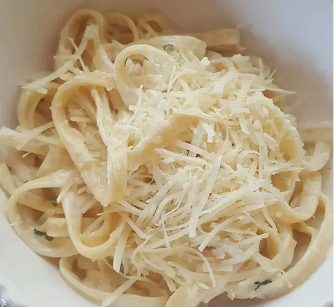

Alfredo

Description
This recipe is a traditional recipe of Italian origin. It is an italian pasta dish of fresh fettuccine tossed with butter and Parmesan cheese.
As the cheese melts, it emulsifies the liquids to form a smooth and rich cheese sauce coating the pasta.
Ingredients
- Butter
- Heavy cream
- Garlic
- Parmesan cheese